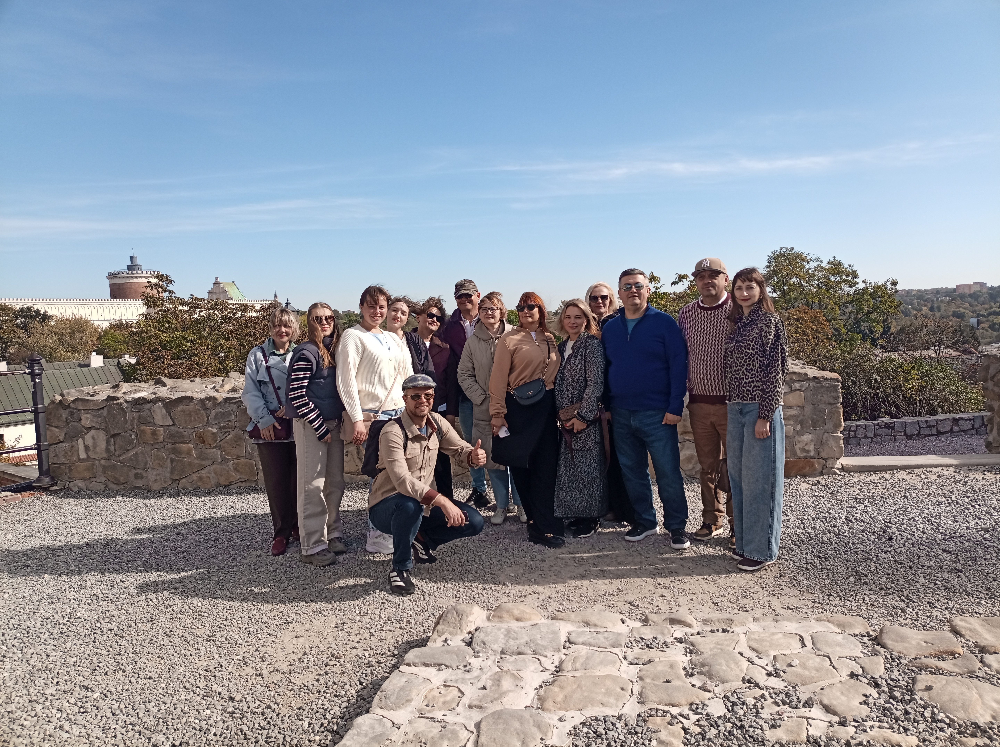
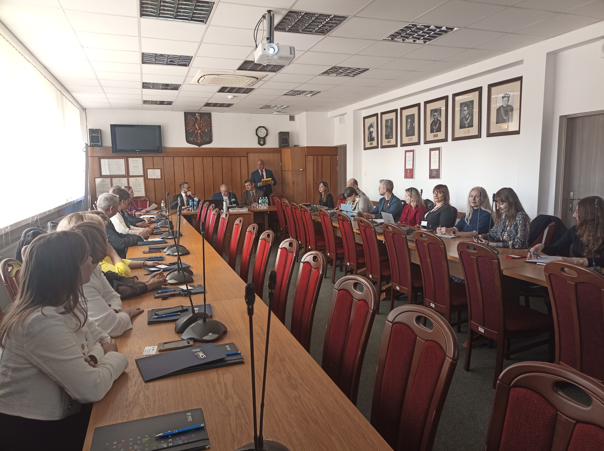
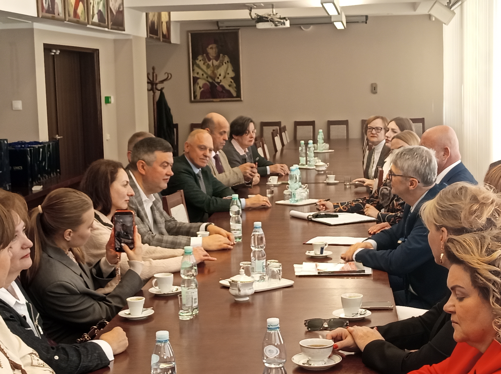

Навчальний візит до Польщі «Вивчення досвіду Республіки Польща на прикладі УНІ-ЛЮБЛІН (Люблін) щодо впровадження європейського досвіду ефективного державного управління та підготовки відповідних кадрів»




27 вересня по 04 жовтня 2026 року відбувся Навчальний візит до Польщі «Вивчення досвіду Республіки Польща на прикладі УНІ-ЛЮБЛІН (Люблін)
щодо впровадження європейського досвіду ефективного державного управління та підготовки відповідних кадрів» (УНІВЕРСИТЕТ МАРІЇ КЮРІ-СКЛОДОВСЬКОЇ)
за проєктом Erasmus+ «Практика належного врядування: Європейський досвід для України» ERASMUS-EDU-2025-CBHE-STRAND-1 (координатор: Віталій СТАШУК).
Учасники проєкту:
- УКРАЇНСЬКИЙ ДЕРЖАВНИЙ УНІВЕРСИТЕТ ІМЕНІ МИХАЙЛА ДРАГОМАНОВА (координатор)
- КИЇВСЬКИЙ СТОЛИЧНИЙ УНІВЕРСИТЕТ ІМЕНІ БОРИСА ГРІНЧЕНКА
- КАРПАТСЬКИЙ НАЦІОНАЛЬНИЙ УНІВЕРСИТЕТ ІМЕНІ ВАСИЛЯ СТЕФАНИКА
- НІЖИНСЬКИЙ ДЕРЖАВНИЙ УНІВЕРСИТЕТ ІМЕНІ МИКОЛИ ГОГОЛЯ
- КРИВОРІЗЬКИЙ НАЦІОНАЛЬНИЙ УНІВЕРСИТЕТ
- БАЛТІЙСЬКА МІЖНАРОДНА АКАДЕМІЯ
- ЕКОНОМІЧНИЙ УНІВЕРСИТЕТ У БРАТИСЛАВІ
- БЕРДЯНСЬКИЙ ДЕРЖАВНИЙ ПЕДАГОГІЧНИЙ УНІВЕРСИТЕТ
- ІНСТИТУТ ПОЛІТИЧНИХ І ЕТНОНАЦІОНАЛЬНИХ ДОСЛІДЖЕНЬ ІМ. І.Ф. КУРАСА НАН УКРАЇНИ
- УНІВЕРСИТЕТ МАРІЇ КЮРІ-СКЛОДОВСЬКОЇ
Під час перебування, згідно з програмою, відбулися зустрічі з керівництвом і викладачами Університету Марії Кюрі-Склодовської, залучення учасників Навчального візиту до урочистих заходів університету, відвідування культурної спадщини м. Люблин; обмін досвідом між учасниками проєкту щодо ефективного державного управління та підготовки відповідних кадрів Республіки Польщи, Словаччини, Латвії та України, а також були розглянуті виклики, з якими довелося зіткнутися та рекомендації щодо розширення впливу проєкту за межі його початкового обсягу.